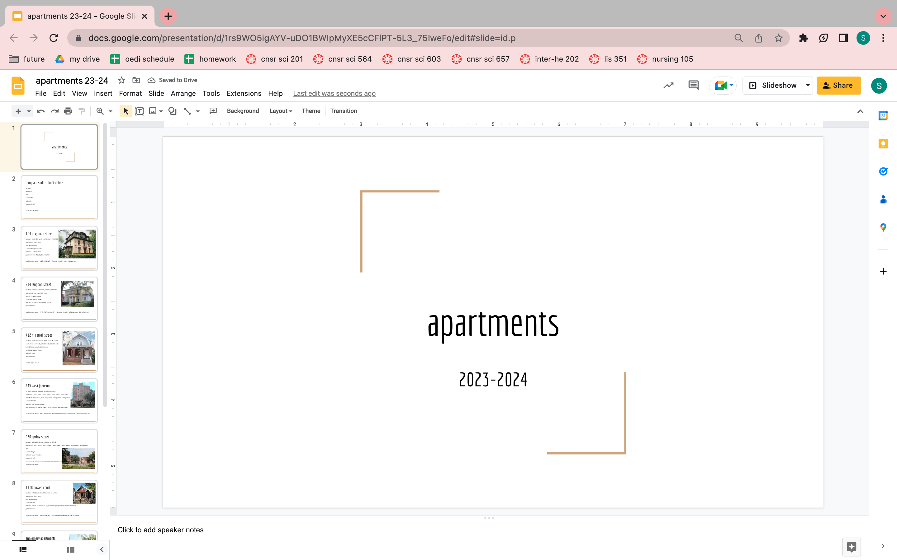
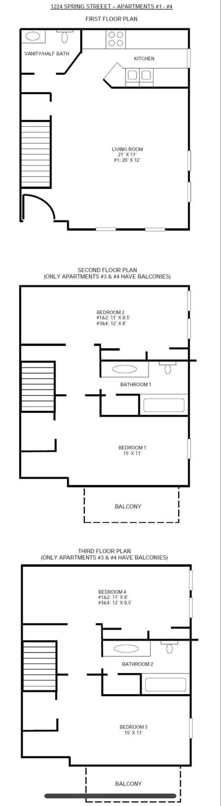

Housing
This section is about how to manage the housing aspect of college.
Living on your own for the first time can be stressful. Whether you choose to commute to school or live in University, on-campus, or off-campus housing, this time of one's life can
Here are three aspects of housing that will affect how successful your decision is.
- Rent & Housing Costs
- Roommates
- Location
Here is how to implement the above tips.:
- Rent & Housing Costs
- Make a budget to better understand what you want your rent and housing costs to be. For the Madison area, $850 is a good and affordable baseline price to look for if living for roommates (based on 2023 personal experience). Don't forget to include costs like Internet, heat, water, etc.
- Roommates
- Decide if you want to live alone or with roommates. Living alone gives more privacy. Living with roommates tends to lower housing costs. If choosing to live with roommates, decide how many people you are comfortable with living with. Finally, choose your roommates wisely. Sometimes, people like to room with people who are not their close friends to keep these relationships separate.
- Location
- Choose what location of campus you would like to live in. Things to consider include where most of your classes are, where you like to study, the closest bus routes, the noise of the city near you, etc.
Here are some pictures of me using the tips above.

My friends and I made a Google Presentation to help compile information about different apartments for the 2023-2024 school year. We kept track of aspects like distance from a location on campus, rent cost, property company, etc.

These are my roommates. We are friends but have separate friend groups to hang out with as well.

This picture shows a floor plan of an apartment in Madison that my roommates and I looked at. We wanted separate rooms for everyone and at least two bathrooms.
For more tips on housing during college, visit the website below.
Visit this website to read a college housing guide!